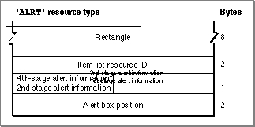

The Alert Resource
You can use an alert resource to define an alert. An alert resource is a resource of type'ALRT'. All alert resources must be marked purgeable, and they must have resource ID numbers greater than 128.To specify the items in an alert box, you must also provide an item list resource, described beginning on page 6-144. To display the alert, you call either the
NoteAlert,CautionAlert,StopAlert, orAlertfunction and pass it the resource ID of the
alert resource. TheNoteAlert,CautionAlert,StopAlert, andAlertfunctions
are described in "Creating Alerts" beginning on page 6-99.The format of a Rez input file for an alert resource differs from its compiled output format. This section describes the structure of a Rez-compiled alert resource. If you are concerned only with creating an alert resource, see "Creating Alert Sounds and Alert Boxes" beginning on page 6-18.
Figure 6-43 shows the structure of a compiled alert resource.
Figure 6-43 Structure of a compiled alert (
'ALRT') resource
The compiled version of an alert resource contains the following elements:
- Rectangle. This determines the alert box's dimensions and, possibly, its position. (The last element in the alert resource usually specifies a position for the alert box.)
- Item list resource ID. The ID of the item list resource that specifies the items--such as buttons and static text--to display in the alert box.
- Fourth-stage alert information. This specifies the response when the user repeats the action that invokes this alert four or more consecutive times. The Dialog Manager responds in the manner specified in the 4 bits that make up this element.
- If the first bit is set, the Dialog Manager draws a bold outline around the second item in the item list resource (typically, the Cancel button) and--if your application does not specify an event filter function--returns 2 when the user presses the Return or Enter key at the fourth consecutive occurrence of the alert. If the first bit is not set, the Dialog Manager draws a bold outline around the first item in the item list resource (typically, the OK button) and--if your application does not specify an event filter function--returns 1 when the user presses the Return or Enter key.
- If the second bit is set, the Dialog Manager displays the alert box at this stage. If the second bit is not set, the Dialog Manager doesn't display the alert box at this stage.
- If neither of the next 2 bits is set, the Dialog Manager plays no alert sound at this stage. If bit 3 is set and bit 4 is not set, the Dialog Manager plays the first alert sound--by default, the system alert sound. If bit 3 is not set and bit 4 is set, the Dialog Manager plays the second alert sound; by default, it plays the system alert sound twice. If both bit 3 and bit 4 are set, the Dialog Manager plays the third alert sound; by default, it plays the system alert sound three times. By defining your own alert sound (described on page 6-137) and calling the
ErrorSoundprocedure (described on page 6-97) to make it the current sound procedure, you can specify your own alert sounds.- Third-stage alert information. This specifies the response when the user repeats the action that invokes this alert three consecutive times. The Dialog Manager interprets these 4 bits in the manner described for the fourth-stage alert.
- Second-stage alert information. This specifies the response when the user repeats the action that invokes this alert two consecutive times. The Dialog Manager interprets these 4 bits in the manner described for the fourth-stage alert.
- First-stage alert information. This specifies the response for the first time that the user performs the action that invokes this alert. The Dialog Manager interprets these 4 bits in the manner described for the fourth-stage alert.
- Alert box position. This specifies the position of the alert box on the screen. (If your application positions alert boxes on its own, don't use these constants, because your code may conflict with the Dialog Manager.)
- If 0x0000 appears here (as specified by the
noAutoCenter constant in the Rez input file), the Dialog Manager positions this alert box according to the global coordinates specified in the rectangle element of this resource.- If 0xB00A appears here (as specified by the
alertPositionParentWindowconstant in the Rez input file), the Dialog Manager positions the alert box over the frontmost window so that the window's title bar appears. This is illustrated in Figure 6-33 on page 6-63.- If 0x300A appears here (as specified by the
alertPositionMainScreenconstant in the Rez input file), the Dialog Manager centers the alert box near the top of the main screen. This is illustrated in Figure 6-34 on page 6-63.- If 0x700A appears here (as specified in the Rez input file by the
alertPositionParentWindowScreenconstant), the Dialog Manager
positions the alert box on the screen where the user is currently working.
This is illustrated in Figure 6-35 on page 6-64.